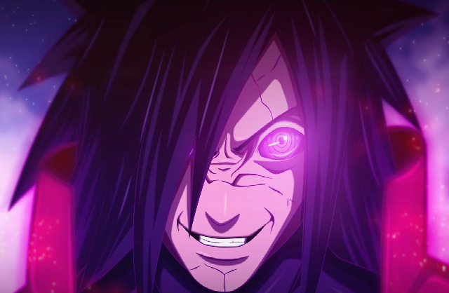

宇智波斑，日本漫画《火影忍者》系列及衍生作品中的角色。宇智波一族的前任首领，不仅是前任六道仙人长子因陀罗的查克拉转世者，还是曾经宇智波一族的最强者。擅长使用可以与尾兽匹敌的“完全体须佐能乎”，与千手柱间一同被称为“传说中的忍者”。青年时期斑与柱间联手建立了忍界史上第一个忍村，并由斑将其命名为“木叶”。后在黑绝的诱导下离开木叶，与柱间在终末之谷交战，最终因被柱间用武士刀刺穿身体而被世人认为已经死亡，事实上在死前将“伊邪那岐”封印到自己的右眼使得自己在战后起死回生。通过将在此战中获取到的柱间细胞移植到自己体内，在晚年开启了轮回眼并通灵出外道魔像和之前因无限月读产生的白绝，将轮回眼移植于长门身上。第三次忍界大战时期救下宇智波带土，计划利用上述安排实现月之眼计划后，因身体机能衰竭而死。在第四次忍界大战中，黑绝诱导药师兜将斑以秽土转生的形式复活，在摆脱兜的控制后，利用带土施展外道·轮回天生之术将自己完全复活，在吸收了十尾后成为了十尾人柱力，发动无限月读后遭到黑绝偷袭而被用于复活大筒木辉夜。辉夜被封印后由于体内尾兽被抽离处于濒死状态，奄奄一息的他在与柱间敞开心扉后彻底死亡。
动乱时代宇智波一族族长之子，六道仙人长子因陀罗的转世者。家里有几个兄弟，但均先后牺牲。木叶隐村成立后斑在南贺神社密室里用永恒万花筒写轮眼的瞳力解读出石碑上六道仙人留下的话语（实际早已被黑绝篡改）后决定离开木叶开始了自己的计划。
童年时期的斑身穿深蓝色的和服，以淡紫色绸带束腰。
在与弟弟泉奈一起统治宇智波一族之时，曾身穿背部标有宇智波一族团扇图案的长袍。
青年时期直至以后，身穿黑色紧身作战服，外部配以红色的叠层挂甲。在战斗时可以提供有效的防护。曾在木叶隐村创立的初期，佩戴过木叶护额。 斑在作战时常常身背宇智波一族代代相传的火焰团扇，此扇由神树树枝制成，质量极其坚硬，拥有宇智波反弹的特殊能力，可将对手的忍术反弹给对方，斑曾用此忍具反弹过漩涡鸣人的小型尾兽玉。值得一提的是，木叶隐村的名字是由斑亲自命名的。
该技能有3个形态攻击方式。可以根据战局和对手的位置灵活操作。按住普攻键释放风遁忍术，风遁忍术压制性较强，可以让你有足够时间与对手拉开身位，长按二技能释放龙炎放歌之术，这个形态伤害较高且范围较广，遇到小的地图，对手很难躲避。
变化出半身须佐向前进行两次斩击。释放一次会增加一格能量，这个技能输出距离达到了半屏，比较好命中对手。这是一个非常好蹭到奥义点的技能。
宇智波斑的必杀技，共造成30段攻击，50万以上伤害。攻击范围为视野内整屏横纵。
